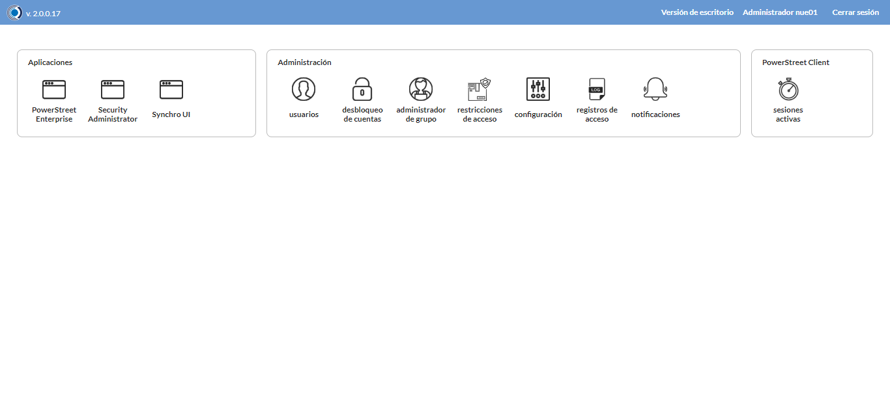

Desarrollado por : Area de Testing PWST
Fecha y hora de inicio : 2022-08-10 13:26:19
Duracion : 0:10:27.236210
Resultado : Total 8，Correctos 8 ，Taza de resultado 100.00%
Resumen 100.00% Errores 0 Fallidos 0 Correctos 8 Test realizados 8
| Caso de Prueba | Total | Correctos | Fallido | Error | Detalles | Captura del error |
| Depositos.Test: Escenario 1 de Depositos | 8 | 8 | 0 | 0 | Detalles | |
test |
pt1_1: 2022-08-10 13:26:20,915 - root - INFO - Se abre el chrome
2022-08-10 13:26:24,280 - root - INFO - Entra a la URL
2022-08-10 13:26:24,421 - root - INFO - Maximiza la pantalla
2022-08-10 13:26:27,483 - root - INFO - Cambia al frame
|
|
||||
test_000: Ingresa a la base de datos |
pt1_2: 2022-08-10 13:26:30,577 - root - INFO - Escribe el usuario
2022-08-10 13:26:30,685 - root - INFO - Escribe la contraseña
2022-08-10 13:26:30,821 - root - INFO - Se dio clic en el boton ingresar
2022-08-10 13:26:33,915 - root - INFO - Ejecutar Enterprise
2022-08-10 13:26:33,916 - root - INFO - Captura: C:\xampp\htdocs\versiones\automatizaciones\AutoPWST\01DEP\report\img screen：20220810_13_26_33.png
2022-08-10 13:26:38,143 - root - INFO - Cambia entre pestañas
|
 | ||||
test_001: Abre menu y ejecuta pantalla |
pt1_3: 2022-08-10 13:27:09,192 - root - INFO - Abre el menu completo
2022-08-10 13:27:22,180 - root - INFO - Abre la pantalla de Depositos
2022-08-10 13:27:22,257 - root - INFO - La pantalla ejecutada es Depositos
2022-08-10 13:27:25,269 - root - INFO - Captura: C:\xampp\htdocs\versiones\automatizaciones\AutoPWST\01DEP\report\img screen：20220810_13_27_25.png
2022-08-10 13:27:25,465 - root - INFO - Se presiona el boton 'Nuevo', para crear un nuevo registro.
|
|||||
test_002: Abre la ventana de nuevo y crear un registro |
pt1_4: 2022-08-10 13:27:30,542 - root - INFO - Se abrio la pantalla para el ingreso de un registro nuevo.
2022-08-10 13:27:30,583 - root - INFO - El campo 'Codigo' si se encuentra visible.
2022-08-10 13:27:30,623 - root - INFO - El campo 'Codigo Usuario' si se encuentra visible.
2022-08-10 13:27:30,663 - root - INFO - El campo 'Codigo Alternativo' si se encuentra visible.
2022-08-10 13:27:30,706 - root - INFO - El campo 'Codigo GLN' si se encuentra visible.
2022-08-10 13:27:30,745 - root - INFO - El campo 'Descrición' si se encuentra visible.
2022-08-10 13:27:30,788 - root - INFO - El campo 'Calle' si se encuentra visible.
2022-08-10 13:27:30,828 - root - INFO - El campo 'Nro. Puerta' si se encuentra visible.
2022-08-10 13:27:30,869 - root - INFO - El campo 'Esquinas' si se encuentra visible.
2022-08-10 13:27:30,908 - root - INFO - El campo 'Capacidad(M3)' si se encuentra visible.
2022-08-10 13:27:30,947 - root - INFO - El campo 'Observación 1D' si se encuentra visible.
2022-08-10 13:27:30,988 - root - INFO - El campo 'Observación 2D' si se encuentra visible.
2022-08-10 13:27:31,029 - root - INFO - El campo 'Clasificación' si se encuentra visible.
2022-08-10 13:27:31,068 - root - INFO - El campo 'Distribuidor' si se encuentra visible.
2022-08-10 13:27:31,121 - root - INFO - El campo 'Depósito Principal' si se encuentra visible.
2022-08-10 13:27:31,161 - root - INFO - El campo 'Agencia' si se encuentra visible.
2022-08-10 13:27:31,199 - root - INFO - El campo 'Oficina' si se encuentra visible.
2022-08-10 13:27:31,238 - root - INFO - El campo 'Depósito central' si se encuentra visible.
2022-08-10 13:27:31,328 - root - INFO - Ingresa el codigo del nuevo registro
2022-08-10 13:27:34,515 - root - INFO - Ingresa el codigo usuario del nuevo registro
2022-08-10 13:27:37,674 - root - INFO - Ingresa el codigo alternativo del nuevo registro
2022-08-10 13:27:40,851 - root - INFO - Ingresa el codigo GLN del nuevo registro
2022-08-10 13:27:44,071 - root - INFO - Ingresa la descripción del nuevo registro
2022-08-10 13:27:47,250 - root - INFO - Ingresa la calle del nuevo registro
2022-08-10 13:27:50,396 - root - INFO - Ingresa el Num de la puerta del nuevo registro
2022-08-10 13:27:53,640 - root - INFO - Ingresa la esquina 1 del nuevo registro
2022-08-10 13:27:56,835 - root - INFO - Ingresa la esquina 2 del nuevo registro
2022-08-10 13:28:00,033 - root - INFO - Ingresa la Capacidad M3 del nuevo registro
2022-08-10 13:28:03,277 - root - INFO - Ingresa la observacion 1D del nuevo registro
2022-08-10 13:28:06,485 - root - INFO - Ingresa la Observacion 2D del nuevo registro
2022-08-10 13:29:05,258 - root - INFO - Captura: C:\xampp\htdocs\versiones\automatizaciones\AutoPWST\01DEP\report\img screen：20220810_13_29_05.png
2022-08-10 13:29:05,539 - root - INFO - Se hace el cambio de pestaña para continuar con el registro nuevo
2022-08-10 13:29:08,712 - root - INFO - Se presiona el boton 'Nuevo', para crear un nuevo registro.
2022-08-10 13:29:13,793 - root - INFO - El campo 'Artículo' si se encuentra visible.
2022-08-10 13:29:13,833 - root - INFO - El campo 'Stock Mínimo' si se encuentra visible.
2022-08-10 13:29:13,871 - root - INFO - El campo 'Stock Deseado' si se encuentra visible.
2022-08-10 13:29:29,520 - root - INFO - Ingresa el Stock Minimo del nuevo registro
2022-08-10 13:29:32,677 - root - INFO - Ingresa el Stock Deseado del nuevo registro
2022-08-10 13:29:35,861 - root - INFO - Se presiona el boton 'Guardar', para guardar el registro.
2022-08-10 13:29:40,984 - root - INFO - Se hace el cambio de pestaña para continuar con el registro nuevo
2022-08-10 13:29:44,119 - root - INFO - Se presiona el boton 'Nuevo', para crear un nuevo registro.
2022-08-10 13:29:49,197 - root - INFO - El campo 'Tipo Documento' si se encuentra visible.
2022-08-10 13:29:49,242 - root - INFO - El campo 'Cuenta Contable' si se encuentra visible.
2022-08-10 13:29:49,281 - root - INFO - El campo 'Centro Costo' si se encuentra visible.
2022-08-10 13:30:20,950 - root - INFO - Se presiona el boton 'Aceptar', para guardar el registro.
2022-08-10 13:30:26,097 - root - INFO - Se da clic en el boton Guardar; se debe crear un nuevo registro.
|

|
||||
test_003: Repetir el registro creado anteriormente |
pt1_5: 2022-08-10 13:30:31,204 - root - INFO - Se presiona el boton 'Refrescar', para crear un nuevo registro igual al anterior.
2022-08-10 13:30:36,340 - root - INFO - Se presiona el boton 'Nuevo', para crear un nuevo registro igual al anterior.
2022-08-10 13:30:41,414 - root - INFO - Se abrio la pantalla para el ingreso de un registro nuevo.
2022-08-10 13:30:41,453 - root - INFO - El campo 'Codigo' si se encuentra visible.
2022-08-10 13:30:41,492 - root - INFO - El campo 'Codigo Usuario' si se encuentra visible.
2022-08-10 13:30:41,532 - root - INFO - El campo 'Codigo Alternativo' si se encuentra visible.
2022-08-10 13:30:41,571 - root - INFO - El campo 'Codigo GLN' si se encuentra visible.
2022-08-10 13:30:41,612 - root - INFO - El campo 'Descrición' si se encuentra visible.
2022-08-10 13:30:41,651 - root - INFO - El campo 'Calle' si se encuentra visible.
2022-08-10 13:30:41,705 - root - INFO - El campo 'Nro. Puerta' si se encuentra visible.
2022-08-10 13:30:41,744 - root - INFO - El campo 'Esquinas' si se encuentra visible.
2022-08-10 13:30:41,783 - root - INFO - El campo 'Capacidad(M3)' si se encuentra visible.
2022-08-10 13:30:41,821 - root - INFO - El campo 'Observación 1D' si se encuentra visible.
2022-08-10 13:30:41,859 - root - INFO - El campo 'Observación 2D' si se encuentra visible.
2022-08-10 13:30:41,898 - root - INFO - El campo 'Clasificación' si se encuentra visible.
2022-08-10 13:30:41,939 - root - INFO - El campo 'Distribuidor' si se encuentra visible.
2022-08-10 13:30:41,978 - root - INFO - El campo 'Depósito Principal' si se encuentra visible.
2022-08-10 13:30:42,017 - root - INFO - El campo 'Agencia' si se encuentra visible.
2022-08-10 13:30:42,056 - root - INFO - El campo 'Oficina' si se encuentra visible.
2022-08-10 13:30:42,095 - root - INFO - El campo 'Depósito central' si se encuentra visible.
2022-08-10 13:30:42,181 - root - INFO - Ingresa el codigo del nuevo registro
2022-08-10 13:30:45,364 - root - INFO - Ingresa el codigo usuario del nuevo registro
2022-08-10 13:30:48,553 - root - INFO - Ingresa el codigo alternativo del nuevo registro
2022-08-10 13:30:51,713 - root - INFO - Ingresa el codigo GLN del nuevo registro
2022-08-10 13:30:54,920 - root - INFO - Ingresa la descripción del nuevo registro
2022-08-10 13:30:58,116 - root - INFO - Ingresa la calle del nuevo registro
2022-08-10 13:31:01,261 - root - INFO - Ingresa el Num de la puerta del nuevo registro
2022-08-10 13:31:04,426 - root - INFO - Ingresa la esquina 1 del nuevo registro
2022-08-10 13:31:07,657 - root - INFO - Ingresa la esquina 2 del nuevo registro
2022-08-10 13:31:10,836 - root - INFO - Ingresa la Capacidad M3 del nuevo registro
2022-08-10 13:31:14,031 - root - INFO - Ingresa la observacion 1D del nuevo registro
2022-08-10 13:31:17,256 - root - INFO - Ingresa la Observacion 2D del nuevo registro
2022-08-10 13:32:16,102 - root - INFO - Se da clic en el boton Guardar; se debe crear un nuevo registro.
2022-08-10 13:32:21,108 - root - INFO - Captura: C:\xampp\htdocs\versiones\automatizaciones\AutoPWST\01DEP\report\img screen：20220810_13_32_21.png
2022-08-10 13:32:21,376 - root - INFO - Se presiona el boton 'Cerrar', para cerrar el mensaje de duplicidad de llave primaria
2022-08-10 13:32:24,509 - root - INFO - Se presiona el boton 'Cerrar', para cerrar la ventana
|
|||||
test_004: Modificar el registro |
pt1_6: 2022-08-10 13:32:28,622 - root - INFO - Se presiona el boton 'Refrescar', para crear un nuevo registro igual al anterior.
2022-08-10 13:32:38,282 - root - INFO - Se da clic en el registro creado, para proceder a modificarlo.
2022-08-10 13:32:41,571 - root - INFO - Ingresa el codigo usuario del nuevo registro
2022-08-10 13:32:44,790 - root - INFO - Ingresa el codigo alternativo del nuevo registro
2022-08-10 13:32:47,981 - root - INFO - Ingresa el codigo GLN del nuevo registro
2022-08-10 13:32:51,261 - root - INFO - Ingresa la descripción del nuevo registro
2022-08-10 13:32:54,537 - root - INFO - Ingresa la calle del nuevo registro
2022-08-10 13:32:57,707 - root - INFO - Ingresa el Num de la puerta del nuevo registro
2022-08-10 13:33:00,932 - root - INFO - Ingresa la esquina 1 del nuevo registro
2022-08-10 13:33:04,158 - root - INFO - Ingresa la esquina 2 del nuevo registro
2022-08-10 13:33:07,355 - root - INFO - Ingresa la Capacidad M3 del nuevo registro
2022-08-10 13:33:10,625 - root - INFO - Ingresa la observacion 1D del nuevo registro
2022-08-10 13:33:13,921 - root - INFO - Ingresa la Observacion 2D del nuevo registro
2022-08-10 13:34:12,547 - root - INFO - Captura: C:\xampp\htdocs\versiones\automatizaciones\AutoPWST\01DEP\report\img screen：20220810_13_34_12.png
2022-08-10 13:34:12,794 - root - INFO - Se hace el cambio de pestaña para continuar con el registro nuevo
2022-08-10 13:34:20,457 - root - INFO - Se da clic en el registro creado, para proceder a modificarlo.
2022-08-10 13:34:39,218 - root - INFO - Ingresa el Stock Minimo del nuevo registro
2022-08-10 13:34:42,414 - root - INFO - Ingresa el Stock Deseado del nuevo registro
2022-08-10 13:34:45,568 - root - INFO - Se presiona el boton 'Guardar', para guardar el registro.
2022-08-10 13:34:50,695 - root - INFO - Se hace el cambio de pestaña para continuar con el registro nuevo
2022-08-10 13:35:00,358 - root - INFO - Se da clic en el registro creado, para proceder a modificarlo.
2022-08-10 13:35:35,099 - root - INFO - Se presiona el boton 'Aceptar', para guardar el registro.
2022-08-10 13:35:40,260 - root - INFO - Se da clic en el boton Guardar; se debe modificar la informacion del registro.
|
|||||
test_005: Eliminar el registro creado |
pt1_7: 2022-08-10 13:35:45,464 - root - INFO - Se presiona el boton 'Refrescar', para proceder a eliminar el registro.
2022-08-10 13:35:55,126 - root - INFO - Se da clic en el registro creado, para proceder a eliminarlo.
2022-08-10 13:35:58,259 - root - INFO - Se hace el cambio de pestaña para continuar con el registro nuevo
2022-08-10 13:36:05,909 - root - INFO - Se da clic en el registro creado, para proceder a modificarlo.
2022-08-10 13:36:14,057 - root - INFO - Se presiona el boton 'Eliminar', para eliminar el registro.
2022-08-10 13:36:14,168 - root - INFO - Se da clic en el boton Guardar; se debe modificar la informacion del registro.
2022-08-10 13:36:23,768 - root - INFO - Se da clic en el registro creado, para proceder a eliminarlo.
2022-08-10 13:36:31,889 - root - INFO - Se presiona el boton 'Eliminar', para eliminar el registro.
2022-08-10 13:36:31,891 - root - INFO - Captura: C:\xampp\htdocs\versiones\automatizaciones\AutoPWST\01DEP\report\img screen：20220810_13_36_31.png
2022-08-10 13:36:32,135 - root - INFO - Se confirma el eliminado del registro
2022-08-10 13:36:37,239 - root - INFO - Se presiona el boton 'Refrescar', para crear un nuevo registro igual al anterior.
2022-08-10 13:36:42,364 - root - INFO - Se presiona el boton 'Cerrar', para cerrar la pantalla de Categorias Fiscales.
|

|
||||
test_006: Cerrar_Navegador |
pt1_8: 2022-08-10 13:36:46,666 - root - INFO - Se cierra chrome
|
|
||||
| Caso de prueba | 8 | 8 | 0 | 0 | Taza de resultado：100.00% | |